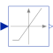

MinLimiterLimit the signal above a threshold |

|
Information
This information is part of the Modelica Standard Library maintained by the Modelica Association.
The block passes its input signal as output signal as long as the input is above uMin. If this is not the case, y=uMin is passed as output.
Parameters (1)
| uMin |
Value: 0 Type: Real Description: Lower limit of input signal |
|---|
Connectors (2)
| u |
Type: RealInput Description: Connector of Real input signal |
|
|---|---|---|
| y |
Type: RealOutput Description: Connector of Real output signal |
Used in Components (1)
|
Modelica.Fluid.Valves.BaseClasses Base model for valves |